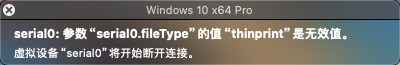
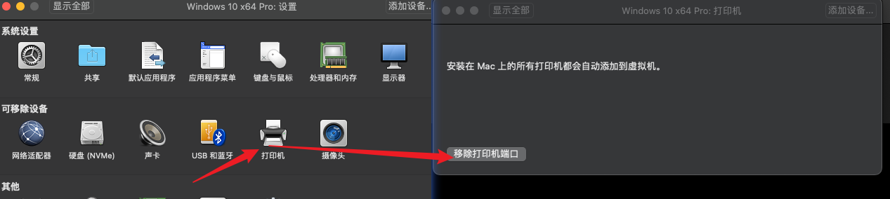

2024-05-15
VMware Fusion
修改于: 2024-05-15VMware Fusion 是一个 MacOS 下的虚拟机客户端(模拟硬件). 用于虚拟机的创建管理使用.
注解
其实与 Vmware Workstation 一致, 不过是不同系统用的.
打开vdi格式文件
最简单的就是使用 qemu-img
将 virtual-box 的 .vdi 文件转换为 wmvare 使用的 .vmdk 文件 (MacOS也支持)
qemu-img convert -f vdi -O vmdk haos_ova-12.3.vdi haos_ova-12.3.vdi.vmdk
然后双击打开选择操作系统文件即可
报错:serial0: 参数“serial0.fileType”的值“thinprint”是无效值。
报错

- 原因
- 其实就是没有找到相应的硬件, 一般都是 虚拟打印机.
- 解决
删除虚拟打印机即可
